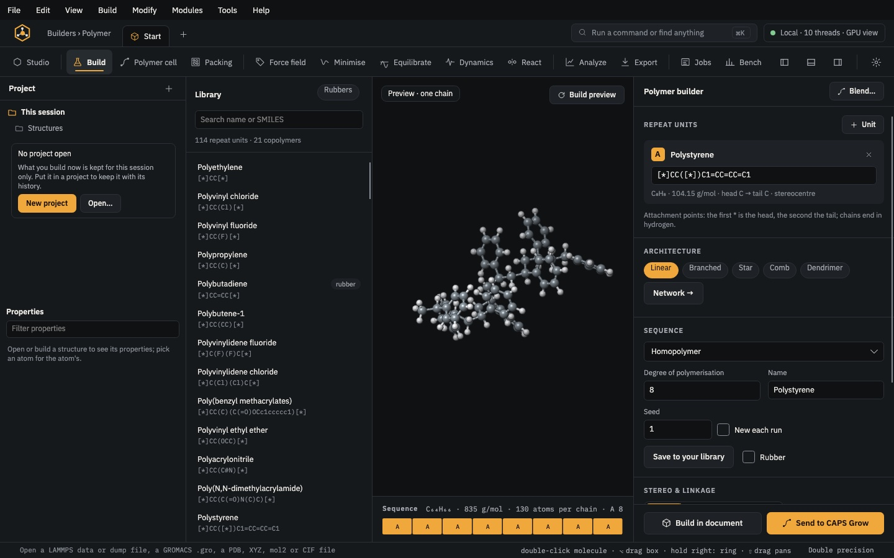

Build · module 03
Molecule builder
Draw a molecule on the 2D sketch or type its SMILES, and CAPS builds it in 3D with conformers cleaned up by a force field. The sketch sits beside the Studio view, so every Studio tool works on the molecule too, and an edit made in 3D redraws the sketch. Use it for monomers, curatives, accelerators, solvents, plasticisers and small additives.
Open it Build›Molecule builder…
- You start with
- A 2D drawing, a SMILES string, or both.
- You get
- A 3D molecule (several conformers if you ask), ready for Packing, the Polymer builder or the Studio.
Step by step
Open the module
Click Molecule on the Start page, or choose Build › Molecule builder…. The window splits into three: the 2D sketch on the left, the Studio view in the middle with the shelves above it, and the molecule's panel on the right (SMILES, conformers, properties, the 3D embedding and the buttons that send the molecule on).
The view stays empty until there is something to build. The structure you had open in the Studio waits in the project list and comes back when you leave the module without building.
Draw atoms and chains
Pick Draw (the pencil, first tool) and an element key: C, H, N, O, S, F, Cl, Br, P, I or Si. Click empty space to place an atom. Click an atom of the same element to add a new atom bonded to it, at the angle a zig-zag chain needs; click an atom of another element to change it. Drag from an atom to grow a bond in 30° steps, or drag onto another atom to bond the two.
Hydrogens are implicit: CAPS adds them from each atom's valence, and the hover label shows how many an atom has (CH₂, NH, OH). Draw H only where you want one written explicitly.
Make and change bonds
Pick Bond (second tool) and an order with the three keys to its right: single, double or triple. Click one atom, then another, to bond them; the first atom gets an amber ring until you click the second (Esc lets go). Click the same atom twice to grow a new atom on it with that bond. Click an existing bond to give it the chosen order. A click on empty space places two atoms with the bond between them.
With Draw instead, a click on a bond steps it through single, double and triple.
CAPS will not draw an atom with more bonds than its valence allows (four for carbon, three for neutral nitrogen, two for oxygen). Such an edit is undone at once and the status line says why, for example Not drawn: C takes 4 bonds. Remove a bond first, or choose a lower order.
Add rings, fused rings and spiro rings
Pick Ring (the hexagon) and a ring in the list next to the bond keys: Benzene (the default), or a saturated 3-, 4-, 5-, 6-, 7- or 8-ring. Click empty space for a free ring; click a bond to fuse the ring onto it; click an atom for a spiro ring through it.
Fusing benzene onto benzene gives naphthalene; fuse again on an outer edge for anthracene (straight) or phenanthrene (angled). The double bonds are placed over the whole ring system, shifting the old ring's where needed, so every CH keeps exactly one hydrogen and the valence check stays ok.
Any element, charges and moves
The … key at the end of the element row opens the full periodic table over the sketch. Pick an element and it gets its own key; Draw then places it. Elements outside the SMILES organic set get their usual hydrogens written out: Se becomes [SeH2], Si [SiH4].
Charge (+) cycles a clicked atom through +1, −1 and 0. Move (the arrows) drags an atom to a new place; drag empty space to pan the drawing.
Delete, undo and tidy
Cut (scissors) breaks a clicked bond and keeps both atoms. Erase (the bin) removes a clicked atom with its bonds, or a clicked bond.
The four keys after the ring list are Undo, Redo, Tidy and Clear. Undo and Redo also work from the keyboard while the sketch has the focus: ⌘Z and ⇧⌘Z on a Mac, Ctrl+Z and Ctrl+Shift+Z (or Ctrl+Y) on Windows and Linux. Tidy lays the drawing out again from its SMILES. Clear empties the sketch, and Undo brings it back.
Or type the SMILES
Type or paste a SMILES under Identifiers on the right, for example
C1CCC(CC1)NSc1nc2ccccc2s1for CBS. The sketch draws it and the molecule is built. Formula, molecular weight, stereocentres and the valence check update as you type; a SMILES that cannot be read says why in red under the box.Drawing and typing are the same molecule: an edit of either updates the other.
Edit in 3D with the Studio's tools
About half a second after each change, the molecule is built in 3D and shown in the view in the middle. It is a structure of the project like any other, so every Studio tool works on it: select and lasso, translate and rotate, place atom, draw bond, cut, +H, Fragments, rings and joins, and the Modify row (element, bond order, hybridisation). The workspaces at the top (Sketch, Assemble, Analyse, Present, Mine) arrange the shelves as they do in the Studio.
Every edit made in 3D writes the molecule's SMILES back and redraws the sketch, without building again, so your 3D geometry stays. After such an edit, the conformer list shows one entry, edited in the Studio view, and that edited structure is what Save, Use in Pack, Insert and Open in Studio take. A new edit of the sketch builds the molecule again from the drawing.
Set the 3D embedding and pick a conformer
Under 3D embedding on the right: method Distance bounds (default) or with a rotor search over the rotatable bonds; 1 to 50 conformers (default 5); clean-up with GAFF2 or UFF (UFF covers every element); hydrogens added from valences, or as written for united-atom models.
The Conformers list gives each conformer's energy relative to the lowest, in kcal/mol. Click a row and the view shows that conformer.
Send it on
Open in Studio keeps the molecule as a structure of the project and goes to the Studio. Use in Pack saves it and adds it to Pack's list of molecules. Use as repeat unit works when the SMILES has two
*(head, then tail): it becomes unit A of the Polymer builder. Insert into document puts it into the structure that was open before you came to the Molecule module: click in the view where it goes (the mouse wheel turns it). The save button writes mol2, PDB, XYZ or LAMMPS data.Rings and joins on a structure in the Studio
With a structure open in the Studio, the Rings and joins button on the view toolbar edits it in place. Pick the two atoms of a bond and Fuse on bond adds a ring of 3 to 8 atoms that shares it; pick one atom and Spiro on atom adds a ring through it. Atoms names the new ring atoms (
O,N C=O C C; empty for carbons), and Aromatic makes a fused six-ring aromatic. Benzene fuses a benzene ring onto the picked bond.Insert puts an atom of the chosen element into the picked bond. Join a structure: pick the leaving atom (a hydrogen, or any atom with one bond), give the piece's own leaving atom and the torsion or leave them to CAPS, then Choose file and join….
The same without the Studio
Every Studio page calls the same core as the caps command and the caps Python package, so a step you clicked can be repeated in a script.
caps build 'C=Cc1ccccc1' -o styrene.mol2 --conformers 5 --ff uff
caps build 'c1ccccc1' -o benzene.mol2
caps edit benzene.mol2 --ops 'ring 1 2 6 aromatic' -o naphthalene.mol2from caps import build
m = build.smiles("C=Cc1ccccc1", forcefield="uff", conformers=5)
m.save("styrene.mol2")Where to go next

BuildPolymer builder114 repeat units and 21 copolymers, or your own SMILES; architecture, sequence, composition, tacticity and end groups.